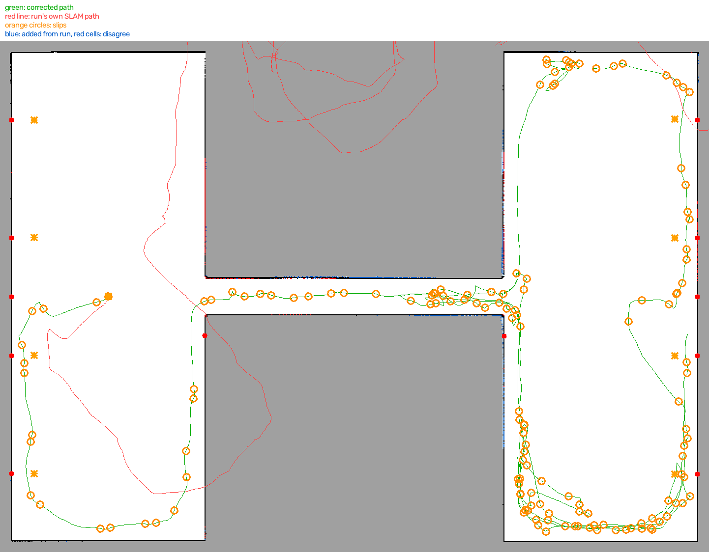
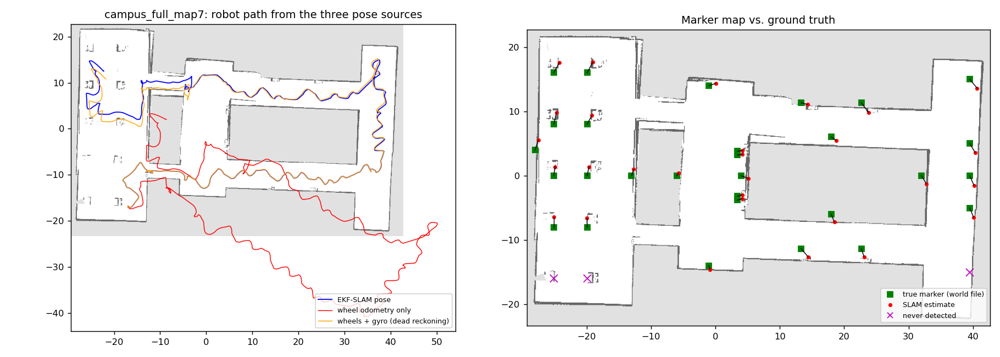
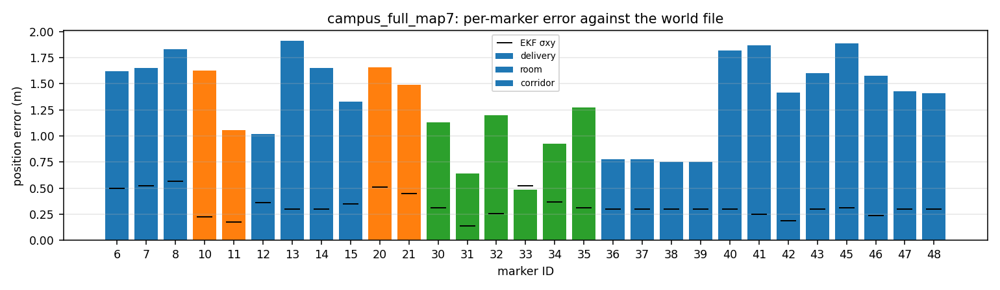

A delivery robot has to answer two questions all the time: what does the building look like (mapping) and where am I in it (localisation). Indoors there is no GPS, wheels slip, and long corridors look the same to a lidar. This project solves both with an ArUco landmark EKF-SLAM: wheel odometry and the IMU gyro predict the motion, the mast camera's ArUco detections correct it, and the 2D lidar draws the occupancy grid. The map is built once by an autonomous exploration run and then reused by the delivery navigator, which localises against the same markers.
| Sensor (Gazebo, RB1 base) | Topic | Used for |
|---|---|---|
| Diff-drive wheel odometry | diff_drive_controller | Distance travelled (EKF prediction) |
| IMU gyro | /robot/imu/data | Heading (wheels slip in in-place turns) |
| Mast RGB camera 640×480, 69° HFOV | /robot/aruco_camera/image_raw | ArUco range/bearing/facing (EKF update) |
| Front 2D lidar | /robot/front_laser/scan | Occupancy grid, obstacle stop, scan matching |
The mapper's initial_pose is set to the Gazebo spawn pose ((−17, −17, 0) in two_buildings,
(−25, 0, 0) in campus_area), so map coordinates equal world coordinates and every saved marker can be compared with the
world file. All waits and time-outs run on simulation time (/clock), so mapping at 3–10× real time
(rtf:=) behaves the same as at 1×.
State. Robot pose (x, y, θ) plus (x, y) of every marker seen so far; the covariance grows by two rows and columns when a new ID appears. Because the marker ID is decoded from the image, data association is exact – there are no wrong matches, the main failure mode of feature-based SLAM.
Prediction. Distance from the wheels, heading change from the gyro. The process noise is
odom_alpha = [0.05, 0.05, 0.06, 0.1] (x and y per metre, yaw per radian turned and per metre). In the mapper the
gyro is trusted strongly (gyro_noise = 0.0003), so a marker re-sighting can correct the position but cannot
rotate the whole map – this was the key fix for the rotated maps of the first runs (see Report 6).
Update. Each detection gives range and bearing in base_link (Report 2). The innovation is gated
(χ² = 13.8) and the noise scales with range/pixels. A marker seen for the first time is initialised from the current pose.
Bearings are down-weighted while the robot turns and ignored above 0.5 rad/s because camera latency turns into heading
error. With sync_sensors on, each image and scan is shifted by the robot motion between its time stamp and the
latest odometry.
Marker facing and delivery points. A weighted average of the measured marker normal gives the direction each
marker faces. For delivery markers the mapper places a delivery point 2.3 m (or the marker's standoff) in front
of the marker, facing it – this is the pose the robot drives to.
Occupancy grid. A 0.1 m log-odds grid (+0.85 hit / −0.4 free, clamped ±4) is ray-cast from every lidar scan at
the EKF pose; a second layer records which walls the camera has looked at from close range. An optional correlative
scan-to-map matcher (scan_matching) corrects x/y in marker-free corridors; it is off by default in the mapper.
After a 360° start turn the robot repeatedly drives to the cheapest of two goal types, using Dijkstra distances on the current map: a frontier (reachable free cell next to unknown space) or a viewpoint 2–3.5 m in front of a wall stretch the camera has not yet seen from close range. The second type makes sure every wall – and therefore every marker on it – is seen from near, not only mapped by the lidar. Unreachable goals are blacklisted. When nothing is left the robot drives home and saves; it also saves every 60 s and on Ctrl+C.


The errors are similar for all markers (1.0–1.9 m) because most of the absolute error is one small rigid rotation of the whole map (≈2.6°) about the start point. After removing the best-fit rotation and shift, the mean error is 0.39 m (max 0.93 m). For delivery this is what counts: the robot localises on the same map it was built with, so a global rotation does not move it away from the delivery points.
| File | Content |
|---|---|
map.pgm, map.yaml | Occupancy grid in Nav2 map_server format (0.1 m) |
aruco_landmarks.yaml | Markers (id, name, x, y, yaw, σ, observations), delivery points, start pose |
observations.csv, trajectory.csv | Every detection; SLAM, wheel and dead-reckoning poses |
scans.npz | Raw scans with poses, for offline correction |
map_preview.png | Walls (green = seen by camera), markers, delivery points, path |
For runs spoiled by slip, two offline tools rebuild the map from scans.npz:
map_optimizer.py) – graph SLAM: keyframes every 0.3 m / 10°, odometry edges
(wheels + gyro), one edge per marker detection, and lidar loop edges from matching each keyframe scan against the map of
all other parts of the run; solved by robust (Cauchy) Gauss-Newton in three rounds of draw → match → optimise, numpy only.
Writes into <map>/corrected/.
The delivery navigator runs the same EKF with the saved markers as fixed beacons (σ 0.05 m) and corrects with
lidar matching against the saved grid. It starts from home, a named point, an explicit pose, or
auto (turn until a marker is in view and compute the pose from it). Every few seconds it checks that the scan
fits the map; if not, recover_pose searches around the current estimate. Obstacles seen by the lidar are kept
for 30 s only and forgotten after each pose correction, so a pose error cannot permanently close a corridor.
The repository also contains slam_toolbox_ws: the same robot and world mapped with
slam_toolbox (graph-based lidar SLAM) and saved with map_saver_cli. It produces a clean grid but no
landmark map or delivery points, and in the 30 m corridor it relies only on scan matching. The ArUco approach was chosen
for delivery because each delivery point is tied to a physical marker the robot can verify.
| Test | Result |
|---|---|
| Offline replica of campus_area, 0.5 % odometry noise | All 12 markers within 0.14 m; 100 % of walls seen by the camera; 20–31 min sim time; no collisions |
| Offline replica, 2 % odometry drift | Complete, marker errors up to 1.4 m |
| Gazebo, campus6 (campus_area) | 12/12 markers, 0.37 m after rigid fit |
| Gazebo, campus_full_map7 (two_buildings) | 19 markers observed, 0.39 m after rigid fit, 242 m path |
| Mapping at 10× real time | 9.9× achieved, same map quality, no collisions (scan processing capped at 40 Hz wall time) |
sim:=false and the
real topics, keep use_imu on, and add markers in long featureless corridors.